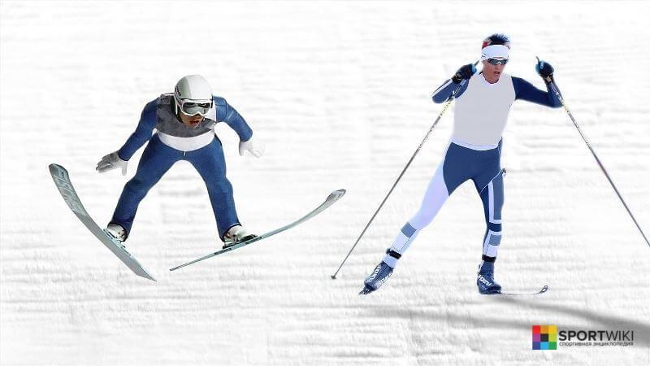
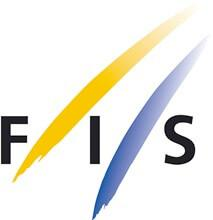
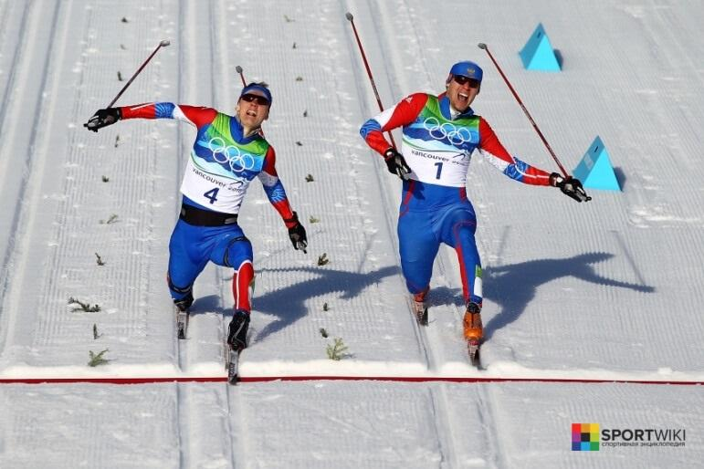
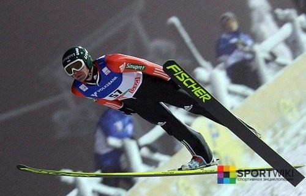

История вида спорта в регионе
Лыжное двоеборье или северная комбинация (англ. nordic combined) – это олимпийский зимний вид спорта, сочетающий в себе лыжные гонки и прыжки с трамплина. Лыжное двоеборье бывает мужским и женским.
Международная федерация лыжного спорта (фр. Federation Internationale de Ski, FIS) — международная организация, которая курирует все виды лыжного спорта, а также занимается организацией и проведением международных соревнований. Штаб-квартира федерации находится в Оберхофен-ам-Тунерзее (Швейцария).
История возникновения лыжного двоеборья.
Годом возникновения лыжного двоеборья принято считать 1892. Как и многие другие лыжные виды спорта, он возник в Скандинавии, а именно в Норвегии. В Холменколлене (Норвегия) проходил зимний фестиваль, во время которого впервые состоялись соревнования по лыжному двоеборью, позже этот фестиваль превратился в крупный международный чемпионат. С начала 20-х годов лыжное двоеборье было включено в программу Северных игр, а в 1924 году было включено в программу первых Олимпийских игр в Шамони (Франция).
Правила лыжного двоеборья.
На Олимпийских играх лыжное двоеборье представлено тремя видами: индивидуальные соревнования, спринт и командные соревнования. Обычно соревнования по лыжному двоеборью проходят в течение двух дней. В первый день проходят соревнования по прыжкам с 90 метрового трамплина (2 прыжка), а во второй день спортсмены соревнуются в лыжной гонке на 15 км.
Спринт отличается от индивидуальных соревнований высотой трамплина (120 метров) и количеством прыжков с него (1 прыжок). Гонка же проходит на дистанции 7,5 км. Команда по лыжному двоеборью состоит из 4 человек, каждый из участников команды должен совершить по 2 прыжка с 90 метрового трамплина, после чего участвуют в лыжной гонке 4х5 км (эстафета).
Экипировка для лыжного двоеборья.
Для прыжков с трамплина: специальные гибкие ботинки с высоким подъемом; крепления, которые будут препятствовать раскачиванию лыж в прыжке.
Для лыжных гонок: узкие беговые лыжи; крепления; ботинки, плотно прилегающие к лодыжке; длинные и прямые лыжные палки; стрейчевый лыжный костюм; смазка для лыж.
Судейство.
Соревнования по лыжному двоеборью проводит судейская коллегия, которую утверждает организация, проводящая данные соревнования. В состав главной судейской коллегии входят: главный судья; технический делегат; ассистент технического делегата; заместители главного судьи; главный секретарь. Общие обязанности судей: Судья должен твердо знать и неуклонно соблюдать правила соревнований, быть организованным, дисциплинированным и беспристрастным. Судья должен иметь соответствующий его должности знак и повязку. Судья должен сообщить главному судье о любом случае нарушения правил соревнований (если оно не было зафиксировано другим судьей) и о нарушении участниками норм поведения. Судья не имеет права покидать место проведения соревнований без разрешения главного судьи или старшего судьи бригады, в которую он входит. Судья не имеет права оказывать никакой помощи участникам соревнований, за исключением медицинской. Судья не имеет права быть участником или представителем организации на соревнованиях, которые он судит.
Соревнования Олимпийские игры – самые престижные международные соревнования по лыжному двоеборью, проводятся раз в четыре года. Чемпионат мира по лыжным видам спорта — совокупность различных спортивных соревнований проводимых Международной федерацией лыжного спорта. Кубок мира по лыжному двоеборью — ежемесячное соревнование по лыжному двоеборью, которое проводится Международной федерации лыжного спорта (FIS).
Источник:http://ru.sport-wiki.org/vidy-sporta/lyzhnoe-dvoebore/